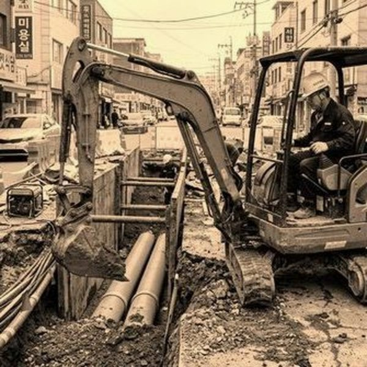
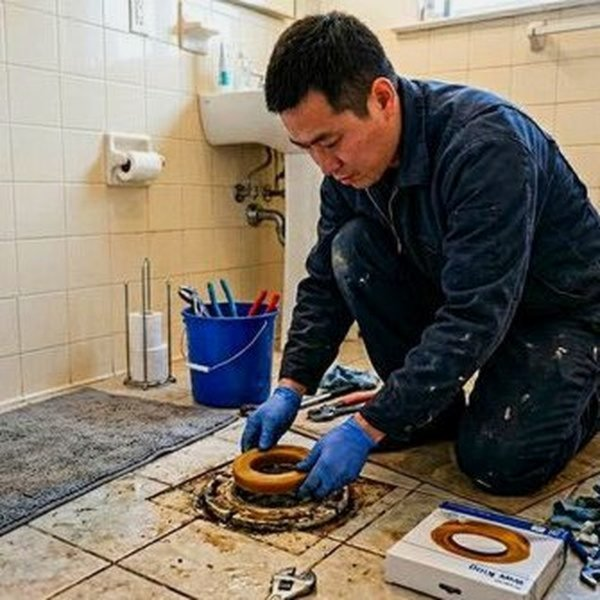
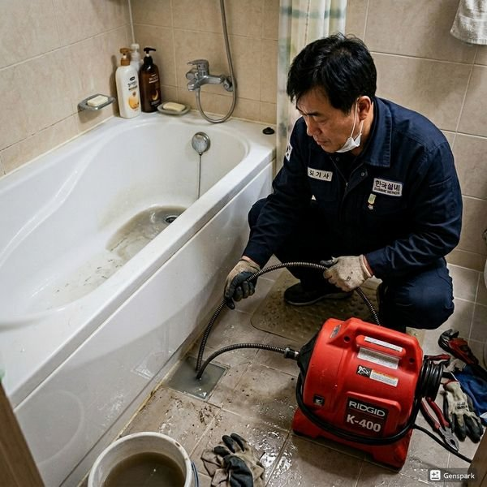

제우스시설관리 | 2025년 4월

새 집으로 이사 가기 전에 배관을 꼼꼼히 점검해야 합니다. 이사 후 배관 문제가 생기면 책임 소재가 애매해질 수 있기 때문입니다.
배관 문제는 수개월 또는 수년 뒤에 나타날 수 있습니다. 따라서 이사 전에 배관 상태를 기록해 두면, 나중에 분쟁이 발생했을 때 증거가 됩니다.
특히 전세나 중고 주택은 이전 세입자의 배관 관리 상태를 알 수 없으므로, 상세한 점검이 필수입니다.
[ ] 1. 수도 급수 점검
• 모든 수전(싱크대, 화장실, 샤워, 세탁기 등)에서 물이 나오는지 확인
• 수압이 약하지 않은지 확인
• 온수와 냉수가 모두 나오는지 확인
[ ] 2. 배수 흐름 점검
• 싱크대 배수가 천천히 내려가는지 확인 (완전히 막혀있지 않은지)
• 변기 물이 정상적으로 내려가는지 확인
• 욕실 배수가 고이지 않는지 확인
• 모든 배수구에서 악취 확인
[ ] 3. 누수 점검
• 싱크대 아래 캐비닛에 물자국이나 축축함 없는지 확인
• 욕실 타일 및 벽에 습한 부분이나 곰팡이 없는지 확인
• 천장에 물의 흔적이나 변색이 없는지 확인
• 벽을 눌렀을 때 물러드는 느낌이 없는지 확인
[ ] 4. 배관 소음 점검
• 수도를 켤 때 이상한 소리가 나는지 확인
• 수도를 끌 때 '쿵' 소리(워터 해머)가 심하지 않은지 확인
• 벽에서 윙윙거리는 소리가 없는지 확인
[ ] 5. 온수기 점검
• 온수기가 정상 작동하는지 확인
• 온수기 아래에서 물이 새지 않는지 확인
• 온수기 설치 연도 확인 (10년 이상이면 교체 고려)
[ ] 6. 세탁기 배수 점검
• 세탁기 배수 호스가 느슨하지 않은지 확인
• 배수 구멍이 막혀 있지 않은지 확인
[ ] 7. 공용 배관 점검 (아파트/빌라)
• 건물 1층, 옥상 배관에 노출된 누수나 손상이 없는지 확인
• 공용 배수 배관에서 악취가 없는지 확인
배관 문제 여부를 사진과 영상으로 기록합니다:
✓ 싱크대 아래 전체 사진
✓ 욕실 벽과 천장 사진
✓ 배관 누수 흔적 클로즈업
✓ 온수기 제조일 사진
특히 문제가 발견되면, CCTV 내시경 검사를 받아 배관 상태를 정확히 기록하는 것이 좋습니다.
이사 후 처음 1주일은 배관에 특히 주의합니다:
[ ] 이전 세입자가 남긴 배관 문제가 있는지 재확인
[ ] 이사 과정에서 배관이 손상되지 않았는지 확인
[ ] 문제 발견 시 사진/영상 기록
[ ] 전월세 보증금 반환 시 증거 제시
✓ 이사 체크리스트를 건물주/관리사무소와 함께 점검
✓ 발견된 문제를 문서로 기록
✓ 서명/날짜와 함께 기록 보관
✓ 퇴실 시에도 동일한 점검 실시
배관은 눈에 띄는 고장이 없어도 내부에서 천천히 진행되는 손상이 있을 수 있습니다. 이사 전 전문가 점검을 받으면 큰 분쟁을 예방할 수 있습니다.

